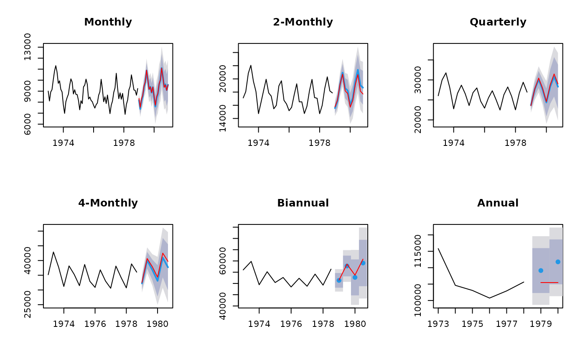

Takes forecasts of time series at all levels of temporal aggregation and combines them using the temporal hierarchical approach of Athanasopoulos et al (2016).
Usage
reconcilethief(forecasts, comb = c("struc", "mse", "ols", "bu", "shr",
"sam"), mse = NULL, residuals = NULL, returnall = TRUE,
aggregatelist = NULL)Arguments
- forecasts
List of forecasts. Each element must be a time series of forecasts, or a forecast object. The number of forecasts should be equal to k times the seasonal period for each series, where k is the same across all series.
- comb
Combination method of temporal hierarchies, taking one of the following values:
- "struc"
Structural scaling - weights from temporal hierarchy
- "mse"
Variance scaling - weights from in-sample MSE
- "ols"
Unscaled OLS combination weights
- "bu"
Bottom-up combination -- i.e., all aggregate forecasts are ignored.
- "shr"
GLS using a shrinkage (to block diagonal) estimate of residuals
- "sam"
GLS using sample covariance matrix of residuals
- mse
A vector of one-step MSE values corresponding to each of the forecast series.
- residuals
List of residuals corresponding to each of the forecast models. Each element must be a time series of residuals. If
forecastcontains a list of forecast objects, then the residuals will be extracted automatically and this argument is not needed. However, it will be used if notNULL.- returnall
If
TRUE, a list of time series corresponding to the first argument is returned, but now reconciled. Otherwise, only the most disaggregated series is returned.- aggregatelist
(optional) User-selected list of forecast aggregates to consider
Value
List of reconciled forecasts in the same format as forecast.
If returnall==FALSE, only the most disaggregated series is returned.
Examples
# Construct aggregates
aggts <- tsaggregates(USAccDeaths)
# Compute forecasts
fc <- list()
for(i in seq_along(aggts))
fc[[i]] <- forecast(auto.arima(aggts[[i]]), h=2*frequency(aggts[[i]]))
# Reconcile forecasts
reconciled <- reconcilethief(fc)
# Plot forecasts before and after reconcilation
par(mfrow=c(2,3))
for(i in seq_along(fc))
{
plot(reconciled[[i]], main=names(aggts)[i])
lines(fc[[i]]$mean, col='red')
}
